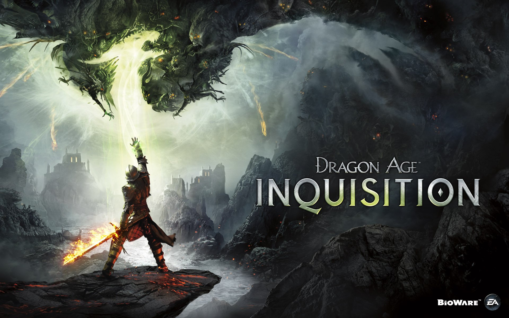
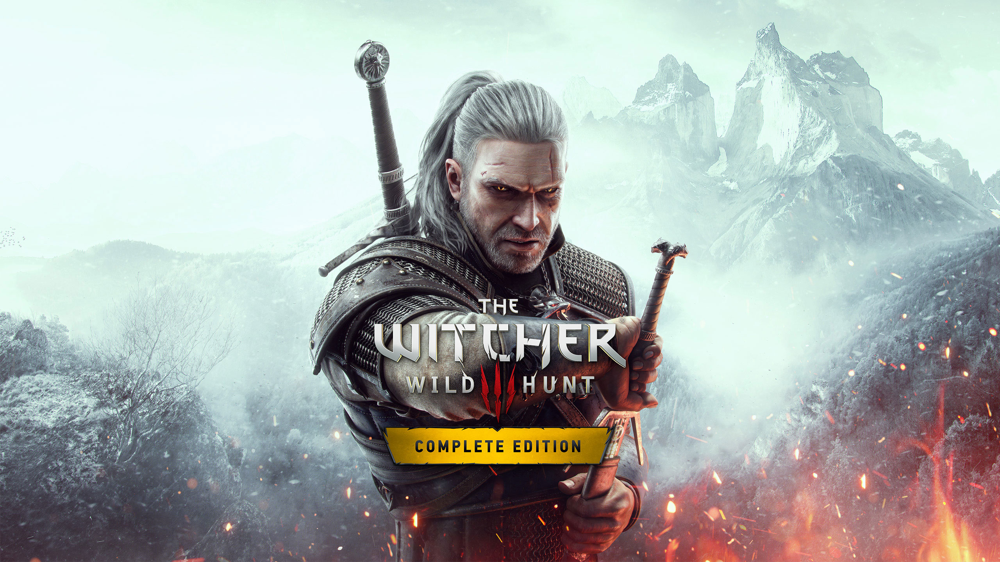
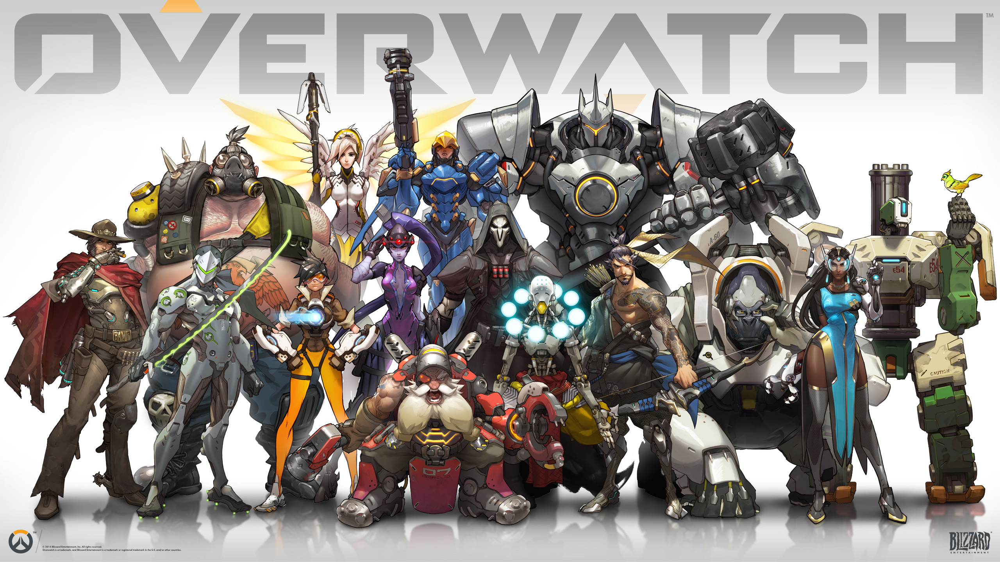
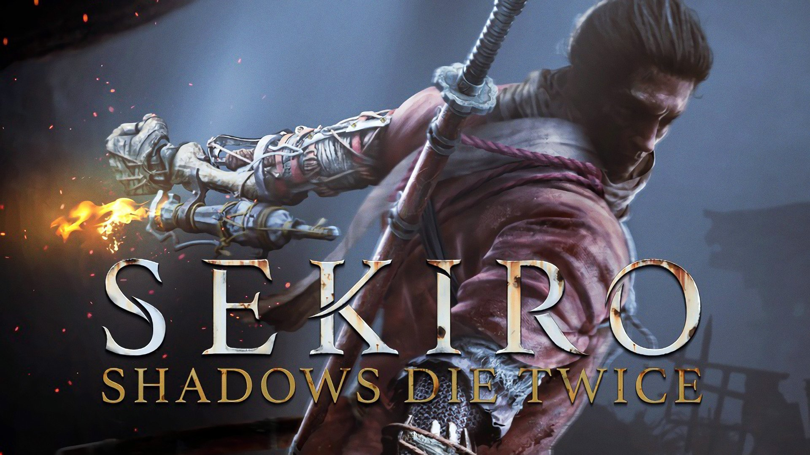
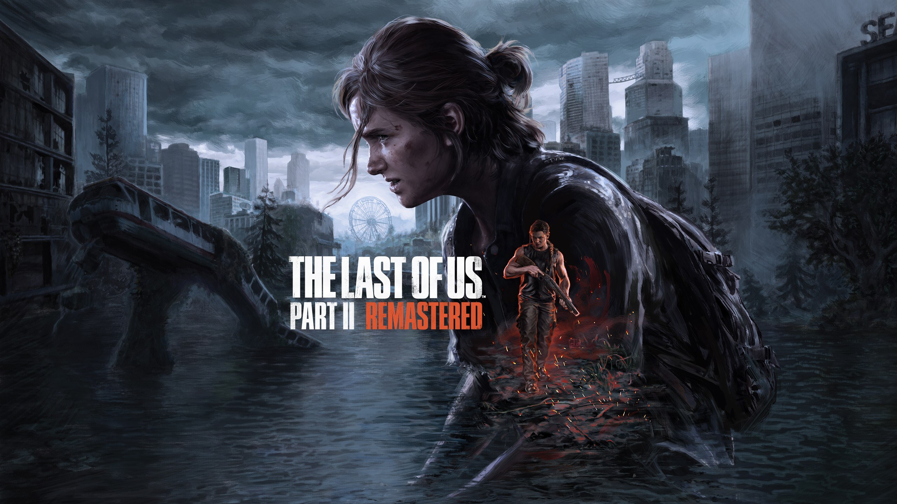
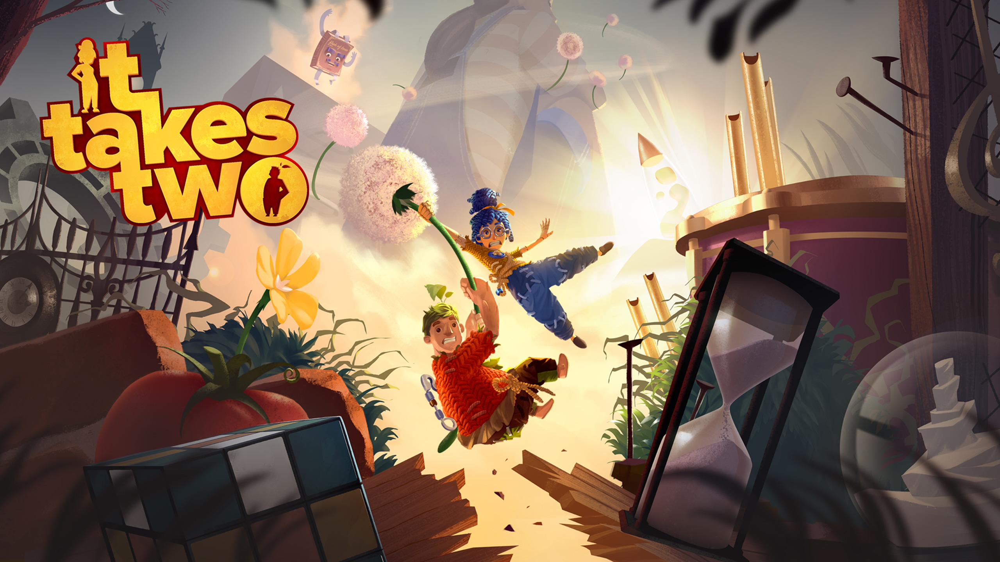
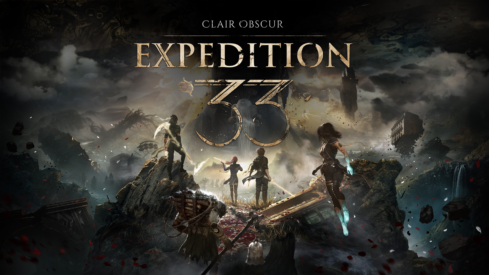

Tổng quan
1.Dragon Age: The Veilguard
Một cuộc phiêu lưu fantasy với những người đồng đội có cá tính riêng và một thế giới đang đứng trước nguy hiểm. Điểm hấp dẫn nằm ở việc khám phá thế giới, xây dựng đội hình và theo dõi câu chuyện của từng nhân vật.

2.The Witcher 3: Wild Hunt
Hóa thân thành Geralt, một thợ săn quái vật lang thang giữa một thế giới rộng lớn đầy chiến tranh, phép thuật và những câu chuyện bất ngờ. Mỗi lựa chọn của bạn đều có thể dẫn câu chuyện đến một hướng khác.

3.Overwatch
Game bắn súng đồng đội với dàn nhân vật có kỹ năng và lối chơi khác nhau. Mỗi trận đấu đòi hỏi phối hợp với đồng đội, lựa chọn nhân vật phù hợp và xử lý tình huống thật nhanh.

4.The Legend of Zelda: Breath of the Wild
Một thế giới mở khổng lồ cho phép bạn tự quyết định mình muốn làm gì. Leo núi, khám phá vùng đất mới, giải đố hay đơn giản là lang thang tìm điều bất ngờ — bạn gần như luôn có một cách riêng để chơi.

5.God of War
Theo chân Kratos và con trai Atreus trong hành trình khám phá thế giới thần thoại Bắc Âu. Những trận chiến mạnh mẽ kết hợp với câu chuyện về tình cha con tạo nên một trải nghiệm rất cuốn.

6.Sekiro: Shadows Die Twice
Nếu bạn thích cảm giác “thắng được boss bằng kỹ năng của chính mình”, Sekiro là lựa chọn cực kỳ đáng thử. Chiến đấu nhanh, chính xác và mỗi lần hạ được một kẻ địch mạnh đều mang lại cảm giác cực kỳ thỏa mãn.

7.The Last of Us Part II
Một hành trình sinh tồn nặng về cảm xúc, nơi tình yêu, mất mát và sự trả thù đan xen với nhau. Game khiến bạn không chỉ chơi mà còn phải suy nghĩ về những gì nhân vật đang trải qua.

8.It Takes Two
Một game được thiết kế đặc biệt để chơi cùng một người bạn. Hai người phải phối hợp, giải đố và vượt qua những thử thách liên tục thay đổi — càng chơi càng dễ tạo ra những khoảnh khắc rất đáng nhớ.

9.Elden ring
Một thế giới fantasy rộng lớn, bí ẩn và đầy những trận chiến khắc nghiệt. Bạn tự do khám phá, tìm vũ khí, xây dựng nhân vật và đối đầu với những con boss cực kỳ đáng nhớ.

10.Baldur's Gate 3
Một thế giới RPG nơi gần như mọi quyết định đều có thể thay đổi cuộc phiêu lưu. Bạn có thể chiến đấu, khám phá, kết bạn và đưa ra những lựa chọn khiến câu chuyện của mình khác hoàn toàn người chơi khác. Đây cũng là một trong những RPG được đánh giá rất cao về chiều sâu lựa chọn và nhân vật.

11.Astro Bot
Một cuộc phiêu lưu platformer vui nhộn, đầy màu sắc và những màn chơi sáng tạo. Dễ tiếp cận nhưng vẫn đủ thú vị để khiến bạn muốn khám phá từng góc nhỏ của thế giới.

12.Clair Obscur: Expedition 33
Một cuộc hành trình tuyệt vọng chống lại một thế lực bí ẩn có khả năng xóa sổ con người. Với thế giới nghệ thuật độc đáo và hệ thống chiến đấu theo lượt đầy tính chiến thuật, đây là chuyến phiêu lưu rất khó quên.

Quay lại Trang chủ Tiếp theo